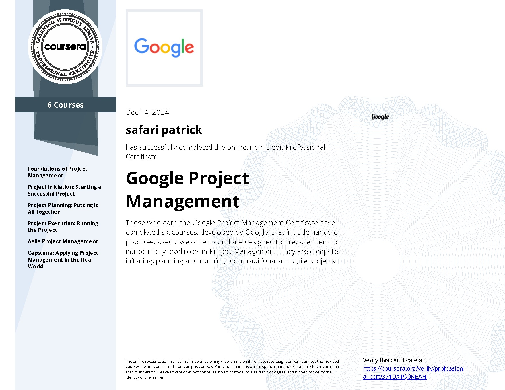

Executive summaryRésumé exécutif
Affordable, steady protein for local households, restaurants and markets.Des protéines abordables et régulières pour les ménages, restaurants et marchés locaux.
A full project plan for a poultry, pig and fish farm that feeds the community and creates local jobs. Below you can move the schedule, explore the risk register and test the business case yourself. Un plan de projet complet pour une ferme de poules, porcs et poissons qui nourrit la communauté et crée des emplois locaux. Plus bas, vous pouvez décaler le planning, explorer le registre des risques et tester vous-même le modèle financier.
Three activities that feed each other: animal waste fertilises the fish ponds and becomes compost, which cuts costs and waste.Trois activités qui se nourrissent entre elles : les déjections animales fertilisent les étangs et deviennent du compost, ce qui réduit les coûts et les déchets.
Affordable, steady protein for local households, restaurants and markets.Des protéines abordables et régulières pour les ménages, restaurants et marchés locaux.
Strong local demand for eggs, pork and fish; current supply is short and expensive.Forte demande locale en œufs, porc et poisson ; l'offre actuelle est insuffisante et chère.
500 laying hens, 10 sows and 2 boars, 3 tilapia ponds.500 poules pondeuses, 10 truies et 2 verrats, 3 étangs de tilapias.
Start-up and running costs, 3-year revenue projection and break-even point.Coûts de démarrage et d'exploitation, projection sur 3 ans et seuil de rentabilité.
5 direct jobs, better nutrition, and a compost system for farm waste.5 emplois directs, meilleure nutrition et un système de compost pour les déchets.
Pick a task and add a delay. The schedule recalculates dependencies, and red tasks are the ones that move the end date.Choisissez une tâche et ajoutez un retard. Le planning recalcule les dépendances ; les tâches en rouge sont celles qui décalent la date de fin.
Each risk has an owner, a trigger to watch and a response. Select a dot to read it.Chaque risque a un responsable, un signal d'alerte et une réponse. Sélectionnez un point pour le lire.
Change the planning assumptions and watch cumulative cash over 36 months. Values are planning assumptions in US dollars, not audited results.Modifiez les hypothèses et observez la trésorerie cumulée sur 36 mois. Les valeurs sont des hypothèses de planification en dollars US, pas des résultats audités.
Work breakdown, dependencies and critical path analysis.Découpage du travail, dépendances et analyse du chemin critique.
Risk register with probability, impact, owner and response.Registre avec probabilité, impact, responsable et réponse.
Cost model, cash flow and break-even for decision makers.Modèle de coûts, trésorerie et seuil de rentabilité pour décider.

Professional certificate issued through Coursera. The link opens Coursera's own verification page.Certificat professionnel délivré via Coursera. Le lien ouvre la page de vérification officielle de Coursera.